IntroductionTorque 3D's Material Editor allows an artist to quickly create and edit a game object's materials without ever touching a line of code. This tool can preview and edit materials mapped to an object in real time from the World Editor. Materials are categorized for ease of organization, and the editor is designed to be backwards-compatible with any existing script files. Materials are defined within script files named materials.cs Typical UseThe Material Editor quickly comes into play when you are building your level by placing objects into the scene. As an example situation, let us assume you have a light fixture you or another artist has exported for use in Torque 3D. The creation of this object was a multi-step process.
SetupWhile running the World Editor, object by using the Object Editor (F1) (a lighting fixture in this situation). The next step is to open the Material Editor by choosing from the menu "Editors -> Material Editor", or with the hotkey (F4). The following image is an example of an object being edited with the Material Editor.
InterfaceTo switch to the Material Editor press the F4 key or from the main menu select Editors -> Material Editor.
Square Symbols: Change Normal Light Color. Preview in World: Show changes made in material editor on selected object in scene view. Bottom Right: Click square to change color of background preview.', WIDTH, 400)" onmouseout="UnTip()" > 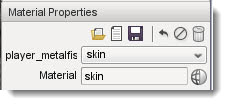Edit Material: Select and Edit an Existing Material (E). Floppy Disk: Save material. Trash Can: Delete Material. Name.dts: Name of 3D asset using this material. First Drop Down: Texture associated with material. Material: Name of material. Square with Ball: Swap current material mapped to this mesh for another. 2nd Trash Icon: Remove this material from mesh target.', WIDTH, 400)" onmouseout="UnTip()" > 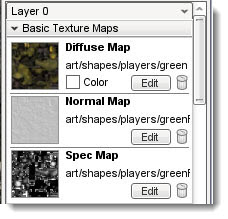Diffuse Map: Base texture for material. Normal Map: Bump map that provides higher detail to mesh without extra polygons. Overly Map: Texture draw on top of other maps. Detail Map: Texture providing additional detail via lightening and darkening base map using high pass filter. Light Map: Texture using baked lighting info. Tone Map: Map which scales the RGB values of material. Used to calculate HDR.', WIDTH, 400)" onmouseout="UnTip()" > 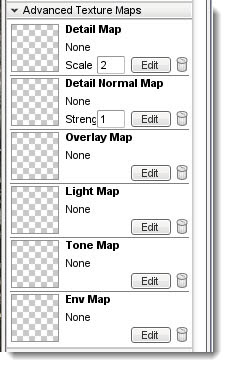Diffuse Map: Base texture for material. Normal Map: Bump map that provides higher detail to mesh without extra polygons. Overly Map: Texture draw on top of other maps. Detail Map: Texture providing additional detail via lightening and darkening base map using high pass filter. Light Map: Texture using baked lighting info. Tone Map: Map which scales the RGB values of material. Used to calculate HDR.', WIDTH, 400)" onmouseout="UnTip()" > 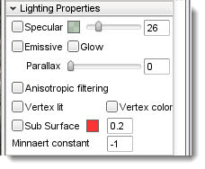Specular: Enables the use of Pixel Specular (shininess) for this layer. The slider adjust the strengt, and you can set the color of the specularity. Glow: Determines if this layer will Glow or not. Exposure: Intensifies glow and emission. Emissive: Causes an object to not be affected by lights. Good for materials from light source objects.', WIDTH, 400)" onmouseout="UnTip()" > 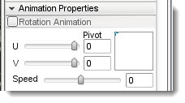Purpose: Causes material to rotate along the surfaces of the mesh it is mapped to. U and V Sliders: Determines the direction of U/V coordinate rotation. Speed: Rate of coordinate rotation.', WIDTH, 400)" onmouseout="UnTip()" > 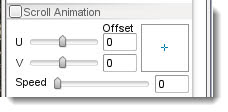Purpose: Causes material to scroll along the surfaces of the mesh it is mapped to. U and V Sliders: Determines the direction of U/V coordinate scrolling. Speed: Rate of coordinate scrolling.', WIDTH, 400)" onmouseout="UnTip()" > 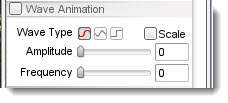Purpose: Causes the material to scroll in a wavy manner along the surfaces of the mesh it is mapped to. Wave Type: Switch between sine, triangle, and sqaure wave patterns. Amplitude: Changes the positive and negative crest of the wave (intensity). Frequency: Adjust wave length, which is the number of waves per time interval.', WIDTH, 400)" onmouseout="UnTip()" > 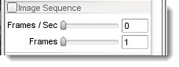Purpose: Animates texture by frames. Frames per Sec: How many frames to display per second. Frames: Number of total frames in the sequence.', WIDTH, 400)" onmouseout="UnTip()" > 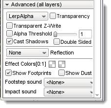Purpose: Adjusts advanced parameters that affects transparency calculations. Transparency Blending: Sets material to use transparent blending modes. Transparent Z Write: Can be used to help force a proper Z Ordering when Z Ordering issues occur. Only valid on materials with Transparency. Alpha Threshold: When enabled, causes pixels under a specific alpha threshold to get discarded rather than be computed.. Cast Shadows: Material determines whether target mesh is allowed to cast shadows. Double Sided: Determines if this material will be rendered from both sides of a polygon. Blending Box: Determines type of blending and reflection applied on the transparent object..', WIDTH, 400)" onmouseout="UnTip()" >
When you wish to swap the material mapped to an object or create a new material, you will use the Material Selector. To change the material on an object, it must first be selected. If you do not know how to select an object, refer to the Object Editor documentation, then switch back to the Material Editor (F4). The Material Properties pane on the right side of the screen displays the properties that describe the material of the selected object.
At the top-right of the pane there is a value named Material. Click on the globe
to the right side of it.
Editing an Existing MaterialYour game's levels can potentially contain thousands of different objects with varying purposes: explosive barrels, ammo crates, static light fixtures, solid walls, etc. Each one will have a material that might need subtle tweaking to fit in, such as a glowing light bulb.
When the Specular property is enabled, the cube in the preview box will have a shiny appearance. In the scene, the metal will also be shinier due to the lighting reflection.
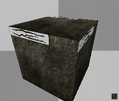
Enabling the Specular property will cause the more reflective areas to give off subtle light bounce.
Enabling the emissive property causes the material to ignore lighting calculations, which returns the bright colors of the diffuse texture.
Enabling the Glow property simulates a light emission effect, similar to how a light bulb would appear.
 Creating a New MaterialWhile developing your game, you will most likely be using your own assets. When you add a model to the scene, it will be assigned the default “No Material” texture which serves as a warning to the designer that no material has been assigned to an object. This material is automatically used for all assets before they have a mapped materials.
If you have already created the textures for your object, creating and assigning a material is a simple process. Start by clicking the globe symbol next to the Material name box. 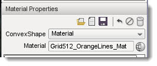 The Material Selector dialog will appear: 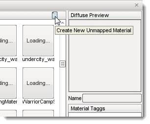 Click the Create New Unmapped Material button found at the top right of the Material section’s header. A new material will be added to the list with a name similar to newMaterial_0. Click on the material to view it in the Diffuse Preview section. 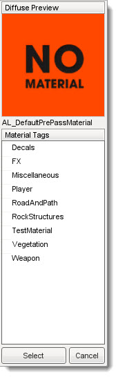 Click the Select button to use that selected material for the object you are editing. After the Material Selector closes, you will be prompted to save any material changes that you may have made before entering the Material Selector. Do so if you wish to retain any changes that you made prior to creating the material. 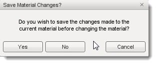 Your new material will have replaced the material selection in the Material Properties pane back in the Material Editor and should now be displayed in the Material field. Type in the real name you want for your new material to be known by then press the Enter key. In this example, the name of the material is "boxxy." 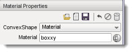 Before editing anything else, click the Save Material button, represented by the floppy disk symbol to save the new material. NOTE: You MUST press the Enter key after typing the material name BEFORE clicking the Save Material button or the material will not be properly saved. 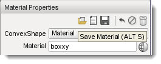 Now, scroll down to the Texture Maps section of the Material Editor. This is where you will be adding the actual texture files that define this new material. 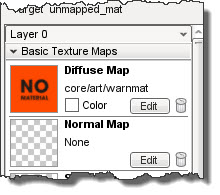 Click on the Diffuse Map preview or the Edit button in that section to open a file browser. Navigate to your diffuse texture, or sometimes referred to as the base texture. Select the file that you want to use as for this new material then click the Open button.
Your preview window and scene should immediately be updated to reflect the addition of your texture.
Repeat the process to add your Normal map. Click on the preview or edit button in the Normal Map section. When the file browser appears, select your normal map texture.
Once again, your scene will be updated to reflect the changes that have been made to the material. Click the save button to retain these changes.
If you open the Material Selector again, you will notice your new material has been saved in the list. This material is now available to be assigned to any other meshes within the project without having to go through the whole process of redefining it again. ConclusionThis article covered the basics of using Torque 3D's powerful Material Editor. As with any other editing tool, remember to save and save often. Take some time to experiment with existing materials provided in our demos, or work with your own materials to get a feel for the the utility. |


{kind=link}
{kind=link}
{kind=link}
{kind=link}
{kind=link}
{kind=link}
{kind=link}
{kind=link}
{kind=link}
{kind=link}
{kind=link}
{kind=link}
{kind=link}
{kind=link}
{kind=link}
{kind=link}